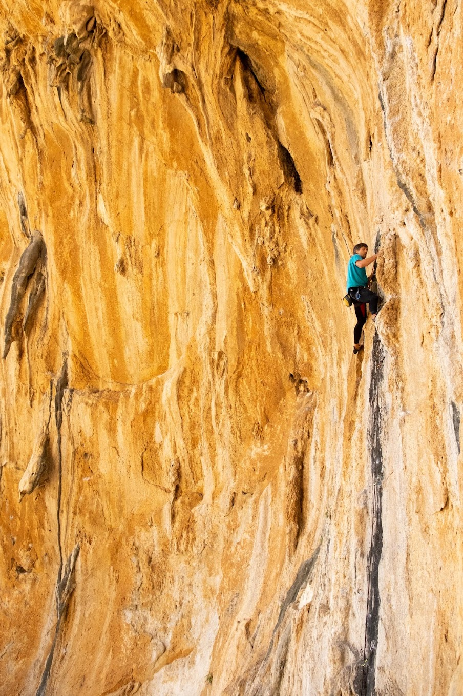

Загальна інформація
Скелелазіння (також відоме як альпінізм) - це вид спорту, який полягає у підйомі на скелі або гору з використанням техніки та спеціального обладнання. Скелелазіння може бути як рекреаційною діяльністю, так і спортивним змаганням.
У скелелазінні використовуються різні методи та техніки, щоб забезпечити безпеку та успішний підйом на вершину. Ці методи включають в себе використання карабінів, мотузок, страхувальних пристроїв та інших спеціальних пристроїв, щоб захистити себе від падіння і забезпечити стабільність на скелі або горі.
Скелелазіння може бути дуже вимогливим і вимагати від спортсменів великої фізичної та психологічної витривалості. Тому перед початком скелелазіння необхідно мати достатній рівень підготовки та знати всі правила безпеки.
Скелелазіння можна виконувати на різних рівнях складності, від простих маршрутів для початківців до досить складних та вимогливих маршрутів для професійних скелелазів. Також, скелелазіння можна використовувати як рекреаційну діяльність, яку можна виконувати в компанії друзів, або як спортивну дисципліну, де спортсмени змагаються за звання найкращих у своїй категорії.
У скелелазінні важливо мати не лише фізичну, але й психологічну підготовку. Спортсмени повинні бути готові до несподіваних ситуацій та знати, як правильно взаємодіяти зі своїми товаришами під час спільного підйому на скелю або гору. Дисципліна, дотримання правил безпеки та спроможність контролювати свої емоці
Скелелазіння є одним з найбільш захоплюючих видів спорту, який залучає в себе фізичну силу, технічні навички, психологічну міць та бажання досягти нових висот. Цей вид спорту дозволяє зануритися у неймовірні краєвиди, побачити прекрасне поєднання скель, гірських вершин та неба.
До початку війни я зі своїми друзями часто виїздили в різні країни щоб полазити. Ось, наприклад, я у Греції у 2020му:
